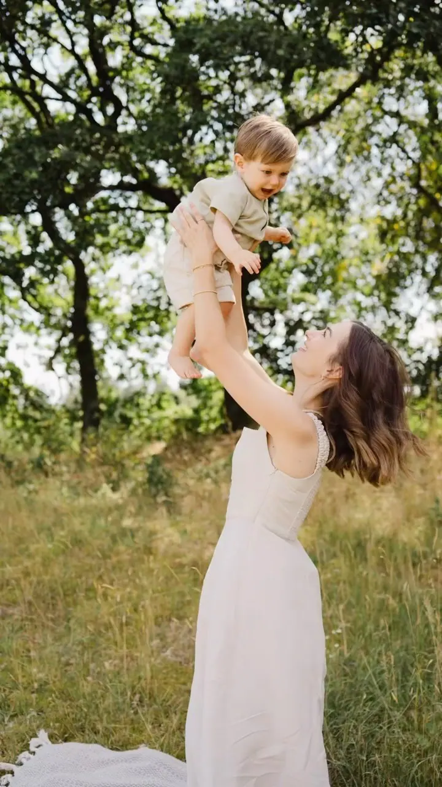
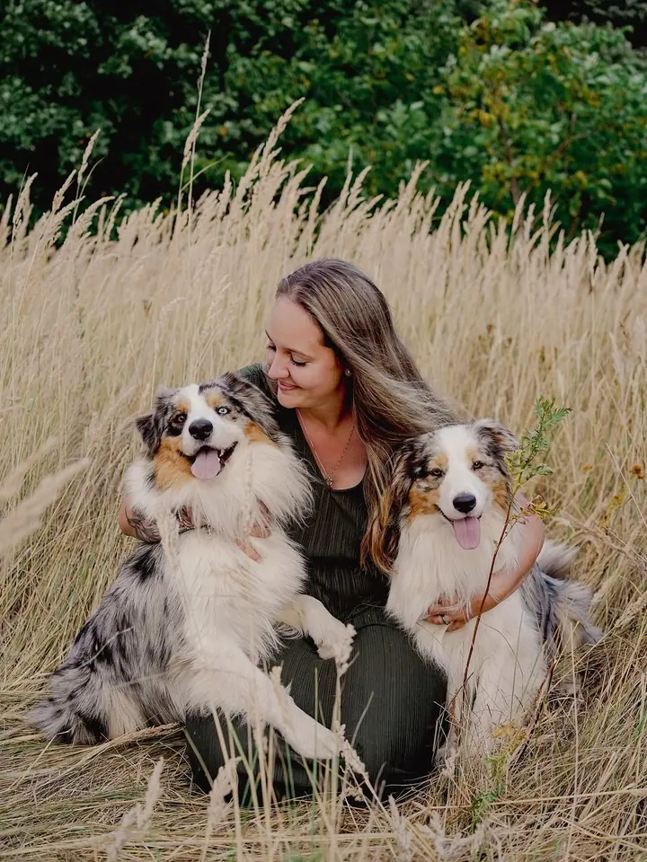
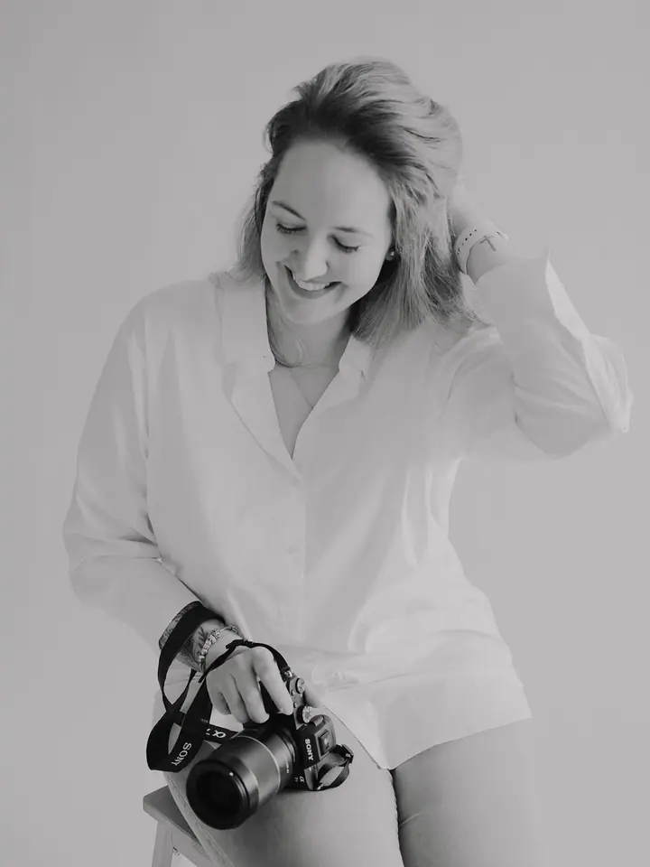

Rodinné focení
Fotím vaše společné chvilky radosti, lásky a emocí. Venku na louce, u vody nebo u vás doma, tak přirozeně, jak to jen jde.

Jmenuji se Denisa Chlastáková a jsem rodinná, portrétní, svatební a newborn fotografka z Chomutova. Fotím rodiny, budoucí rodiče i nevěsty v jejich velký den. Venku na l…
Rezervovat termínJsem máma a fotografka v jednom. Možná i proto mě nejvíc baví fotit lásku a obyčejné společné chvilky, ze kterých se jednou stanou ty nejcennější vzpomínky.


Vždy se snažím, aby fotky byly plné přirozenosti. Chci, abyste se u focení cítili uvolněně a odcházeli s dobrým pocitem, i když máte pocit, že pózovat neumíte. Klidně vezměte i pejsky, patří do rodiny stejně jako vy.
Fotím venku, u vás doma i ve svém ateliéru, kde mám prostor pro rodiny, páry, ženské portréty a narozeninová focení dětí. Nejsou to jen fotky. Je to vzpomínka na celý život.
Co fotím
Fotím vaše společné chvilky radosti, lásky a emocí. Venku na louce, u vody nebo u vás doma, tak přirozeně, jak to jen jde.
Na svatbě se snažím být tichým pozorovatelem a nezasahovat do dění vašeho dne. Zároveň jsem vám oporou, a když je potřeba, pomůžu s čímkoliv.
Focení pro páry, budoucí rodiče i čerstvé rodiny. Miminka fotím v klidu u vás doma, v prostředí, které znáte.
Neláká vás venkovní focení? V mém ateliéru fotím rodiny, páry, ženské portréty i narozeninová focení dětí s decentní výzdobou.
Postup
Napište mi, co byste rádi fotili a kdy. Společně najdeme termín, u narozeninového focení ideálně alespoň měsíc dopředu.
Louka, voda, váš domov, nebo můj ateliér. Poradím vám, co se k vašemu focení hodí nejvíc.
Nikam nespěcháme. Navedu vás, ale hlavně nechám prostor pro přirozené chvilky a emoce. Na svatbě jsem spíš tichým pozorovatelem.
Fotky pečlivě vyberu a upravím, aby z nich byla vzpomínka, ke které se budete rádi vracet.
Otázky
Vůbec ne. Navedu vás a hlavně se snažím, abyste se cítili uvolněně. Nejhezčí fotky stejně vznikají, když na foťák zapomenete.
Venku na louce nebo u vody, u vás doma, nebo v mém ateliéru. Miminka ráda fotím v pohodlí domova.
Určitě. Pejsci k rodině patří a fotky s nimi fotím moc ráda.
Připravím pro vaše dítko minimalistickou, decentní výzdobu, třeba balonky, houpacího koníka nebo plyšáka. Na barvách se domluvíme, proto je potřeba rezervace alespoň měsíc dopředu. Pro malé slečny mám na půjčení i šatičky.